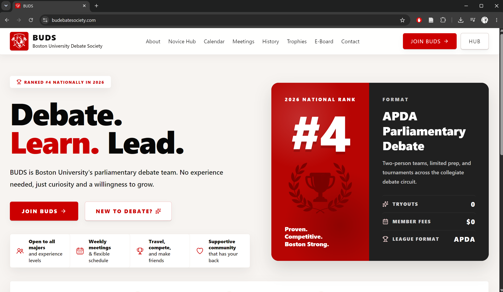

Janice Lee's Portfolio
Computer Science and Linguistics student focused on AI, law, public policy, and the systems that make complex information easier to search and analyze.

Computer Science and Linguistics student focused on AI, law, public policy, and the systems that make complex information easier to search and analyze.
Hello! My name is Janice Lee and I'm a Computer Science and Linguistics major entering my third year of undergrad at Boston University, focused on the intersection of AI, law, and public policy. My work combines technical skills in Python, SQL, React, and data organization with an interest in how legal systems respond to emerging technologies. I'm currently building projects such as an AI policy and litigation database, where I track cases, laws, enforcement actions, and compliance issues to make complex regulatory developments easier to search and analyze. As Vice President and varsity competitor for BUDS, the 4th-ranked APDA debate club in the nation, I've also developed strong research, argumentation, and communication skills. I'm preparing for AI policy and law-related internships where I can help translate technical AI issues into clear, useful legal and policy analysis.
Tools I use to build research databases, public-facing resources, and data-driven policy projects.


Built a Python, SQLite, and Streamlit AI policy database for 100+ records on cases, laws, enforcement actions, compliance issues, and source metadata. The project turns scattered legal and regulatory developments into searchable structured data for clearer policy analysis.
To run the database locally, you must have Python installed and the project dependencies installed, especially Streamlit and pandas.
Built BUDS' first official website for a 100+ member club using React, JavaScript, Supabase, and CSS. The site preserves club history, supports recruitment, and creates public-facing resources plus private role-based hubs for members, e-board, and admins.

Additional strengths from debate, legal-policy research, and technical documentation.
Tracking cases, laws, enforcement actions, and compliance issues across AI policy developments.
Translating technical AI issues into clear legal and regulatory arguments.
Structuring complex source material into searchable, usable, review-ready records.
Building, weighing, and presenting arguments through APDA debate experience.
Communicating complex ideas clearly in competitive, time-constrained settings.
Documenting systems, research workflows, and policy-facing project decisions.
Debate leadership and research work that support my AI policy and pre-law goals.
I'm open to AI policy, law-related, research, and technical project opportunities.
Designed and developed by Janice Lee